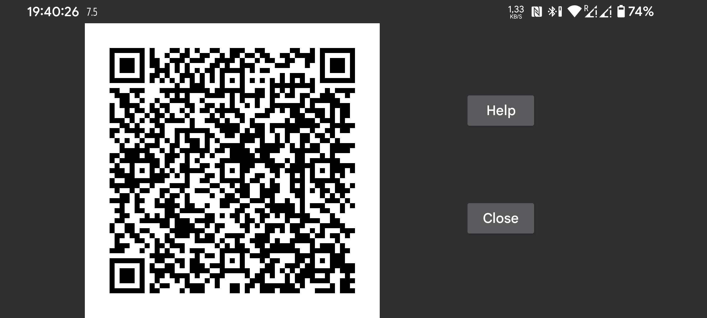

میتوانید تنظیمات طرف دیگر اتصال آینهسازی را با اسکن یک کد QR از طریق «منوی چپ ← عکس» روی تلفن دوم بسازید.
در «منوی میانی سمت چپ ← آینهسازی ← QR خودکار» تنظیمات هر دو طرف خودکار ایجاد میشود. مثلاً میتوانید همهٔ دادههای این تلفن را به تلفن دیگر بفرستید.
با این روش ممکن است ناخواسته اتصالهای زیادی ساخته شوند. برای حذف هر اتصال، روی آن بزنید، «ویرایش» و سپس «حذف» را انتخاب کنید.
برای تنظیم دستی یک طرف، در تلفن اول به «منوی میانی سمت چپ ← آینهسازی ← افزودن اتصال ← QR» بروید؛ طرف دوم را با اسکن کد QR روی تلفن دیگر تنظیم کنید.